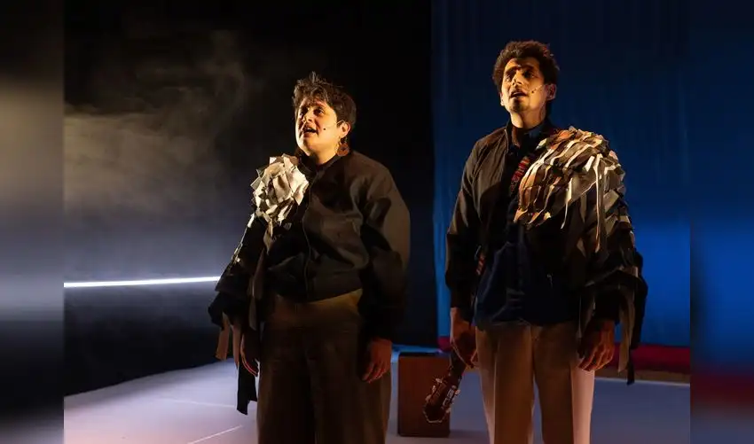
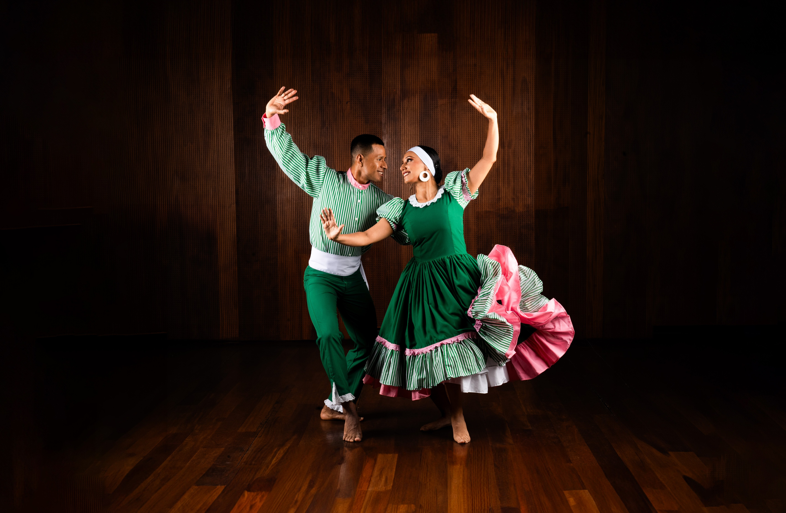

Una galería presenta arte contemporáneo,representante de una amazonia.

'Recordar', la exitosa obra belga sobre inmigrantes que no pudieron regresar a Perú, se estrena en Lima.

Vuelve “Retablo Afroperuano” del Ballet Folclórico Nacional con un homenaje al centenario del nacimiento de Nicomedes Santa Cruz